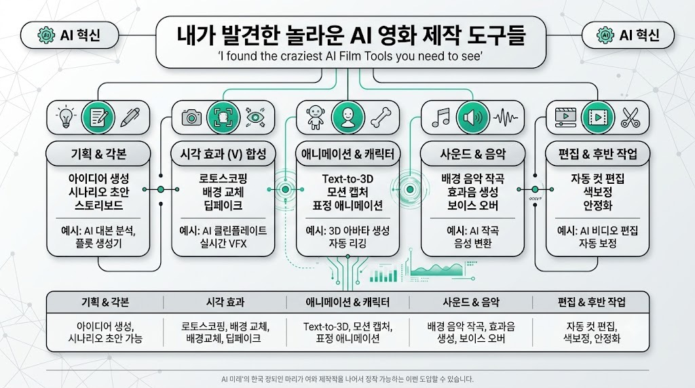

Curious RefugeMORNING DIGEST · 2026-07-26 · Curious Refuge🎬 영상
I found the craziest AI Film Tools you need to see...

01핵심 개요
항목
내용
채널
Curious Refuge
제목
I found the craziest AI Film Tools you need to see... (AI Film News 주간 뉴스)
길이
약 25분(1,500초 내외)
핵심결론 1
4D Views가 4D 가우시안 스플랫 카메라 배열 기술을 공개, 한 번 촬영한 장면을 후반작업에서 자유롭게 카메라 각도·줌을 바꿀 수 있어 사운드 스테이지 촬영 방식 자체를 바꿀 잠재력이 있다
핵심결론 2
신규 AI 영상 생성 도구 Flux 3(720p, 오픈웨이트 예정)를 SeeDance 2.0(4K), LTX 2.3(1080p, Shutterstock·Getty 라이선스 데이터 학습)과 5개 프롬프트로 정면 비교한 결과 물리 표현·정확도 모두 SeeDance가 우세, Flux 3는 아직 출시 전인데도 기존 오픈소스 LTX 2.3보다 뒤처지는 장면이 많았다
핵심결론 3
넷플릭스는 300편 이상의 프로덕션에 AI를 활용했다고 공식 발표했고, Adobe가 크리에이티브 전문가 16,000명을 설문한 결과 87%가 "AI가 사업·팔로워 성장을 가속했다"고, 75%가 "이제 업무에 필수"라고 답했다
02핵심 내용 구조
1) 4D Views — 4D 가우시안 스플랫 카메라 배열
4D Views라는 회사가 디지털 카메라 배열로 눈앞의 장면을 촬영해, 그 전체 장면을 탐색 가능한 4D 가우시안 스플랫으로 변환하는 기술을 공개했습니다.
데모에서 고양이, 스튜디오 인터뷰, 격투 장면 등을 실제로 조작해보며 카메라 각도를 자유롭게 바꾸고 확대·축소할 수 있음을 보여줬습니다. 완벽하지는 않고 일부 아티팩트(잡음)가 남지만 완성도는 상당히 높다고 평가했습니다.
다큐멘터리 촬영에서 "카메라 A, 카메라 B" 식으로 고정 앵글을 미리 정할 필요 없이, 후반작업에서 원하는 각도를 자유롭게 골라낼 수 있다는 것이 핵심 가치입니다.
2) 4D 가우시안 스플랫이 중요한 4가지 이유
후반작업에서 카메라 컨트롤 확보: 촬영 이후에도 앵글을 계속 바꿀 수 있어, 다른 AI 도구와 결합하면 캐릭터를 장면에서 오려내 다른 배경에 합성(로토스코핑)하기도 쉬워집니다.
통제된 환경에서 촬영 후 배경만 나중에 합성: 실제 로케이션에 크루를 데려가지 않고 4D 가우시안 스플랫 사운드 스테이지에서 촬영한 뒤 원하는 배경을 후반에 합성할 수 있습니다.
고품질 모션 캡처: 다수 카메라가 고해상도로 배우를 촬영하므로, 값비싼 모션 캡처 슈트 없이도 AI 도구와 연결해 고품질 모션 캡처 데이터를 얻을 수 있습니다.
배우 연기에 대한 통제력: AI 생성처럼 "슬롯머신을 돌리며 운에 맡기는" 방식이 아니라 실제 배우가 연기한 것을 후반에서 원하는 각도로 재구성할 수 있어 연기의 진정성을 유지합니다.
발표자는 향후 사운드 스테이지가 벽면 전체에 카메라를 두른 4D 가우시안 스플랫 스튜디오 형태로 진화하고, 의상·배경까지 후반에서 렌더링하는 방식이 표준이 될 것으로 전망했습니다.
3) Lucy 2.5 — 실시간 시각효과·물리 렌더링 도구
Lucy 2.5는 환경을 실시간으로 변형할 수 있는 실시간 시각효과 도구로, 물리 법칙을 상당히 정교하게 해석합니다.
데모에서 가상 거울로 옷을 실시간으로 갈아입혀보는 기능(패션·쇼핑 활용 가능), 손으로 만지면 반응하는 슬라임 렌더링, 머리 주변에서 빛을 움직이면 실시간으로 그림자가 반응하는 실시간 라이팅 기능을 시연했습니다.
사용자가 직접 업로드한 참조 이미지(미드저니로 만든 원숭이 캐릭터)를 실시간으로 스키닝(캐릭터 외형 변경)해, 스트리밍 방송에서 실시간 캐릭터 변신에 활용할 수 있는 가능성도 보여줬습니다.
4) Flux 3 vs SeeDance 2.0 vs LTX 2.3 — AI 영상 생성 도구 5종 비교 테스트
Flux 팀이 이미지·영상을 업로드해 결과물을 컨트롤할 수 있는 신규 AI 영상 생성 도구 Flux 3를 발표했습니다. 조만간 오픈웨이트로 공개되어 로컬 컴퓨터에서 무료로 구동할 수 있고, 오디오가 포함된 영상 클립도 생성 가능하다는 점이 특징입니다. 다만 현재 720p 해상도로 제한되어, 4K까지 지원하는 SeeDance와는 비교 대상이 아니라고 짚었습니다.
1. 미드저니 이미지 기반 2샷 대사 장면: Flux 3는 업로드한 캐릭터와 다른 얼굴로 왜곡됐고, SeeDance가 연기·물리 표현에서 가장 우수했습니다. 2. 복도 리버스 트래킹 샷: Flux 3는 아티팩트가 심해 실무에 쓰기 어려웠고, SeeDance와 LTX 모두 배경 인물이 갑자기 나타나는 등 결점이 있었습니다. 3. 아기 판다가 언덕을 굴러 내려오는 장면: 세 도구 모두 완벽하지 않았으나 SeeDance가 근소하게 나았습니다. 4. 주전자(케틀) 인플루언서 광고 영상: 이 경우는 예외적으로 Flux 3가 LTX보다 나은 결과를 보였습니다. 5. 멀티모달 테스트(참조 영상 기반 인트로 생성): Flux 3는 일부 물리 표현은 괜찮았지만 전체적으로 어색했고, SeeDance가 사실성 면에서 크게 앞섰습니다.
종합적으로 아직 출시 전인 Flux 3가 이미 시장에 나와 있는 오픈소스 도구 LTX 2.3보다도 못한 경우가 많아, "왜 LTX 2.3 대신 Flux 3를 쓰는가"라는 근본적 의문이 제기됐습니다. 또한 다른 크리에이터가 Flux 3로 한국어 릭 앤 모티를 생성한 사례를 언급하며, 스크래핑된 학습 데이터로 인한 저작권 문제 가능성도 지적했습니다.
LTX 2.3은 Shutterstock·Getty의 라이선스 데이터로 학습되어 결과물의 저작권이 상대적으로 더 안전하다는 점이 스튜디오 환경에서 강점으로 꼽혔습니다.
5) 스토리보드 vs 뎁스맵(depth map) — SeeDance 워크플로우 비교 실험
지난주 소개한 뎁스맵 활용 워크플로우를 한 단계 더 발전시켜, 스토리보드를 뎁스맵으로 변환해 SeeDance에 입력하는 방식이 더 정확한 결과를 내는지 실험했습니다.
Nano Banana Pro로 날개 달린 사자를 탄 캐릭터의 시작 이미지와 캐릭터 시트를 만들고, GPT(원문 "GPT-2"로 언급, 문맥상 이미지 생성 도구)로 9컷짜리 3패널 스토리보드를 제작했습니다. 이 스토리보드를 SeeDance에서 뎁스맵으로 변환해 두 번째 버전도 준비했습니다.
포토리얼리스틱 스토리보드를 그대로 입력한 결과는 스토리보드에 충실했지만 컷마다 정서적 긴장감이 부족하고 일부 연속성 오류가 있었습니다.
반대로 9패널 뎁스맵 이미지를 입력한 결과는 여전히 연속성 오류는 있었지만 장면 전체를 훨씬 유기적으로 엮어냈습니다. 뎁스맵 방식은 SeeDance에 더 많은 해석 여지를 주는 대신, 더 견고한 3D 환경과 컷 간 연속성을 만들어낸다는 것이 결론입니다.
다만 스토리보드와 샷 단위로 100% 정확히 일치해야 하는 작업에는 뎁스맵 방식이 적합하지 않고, 물리 표현·연속성이 더 중요한 작업에는 뎁스맵 방식이 유리하다고 정리했습니다.
6) 업계 동향 — 넷플릭스, Adobe, Deezer, LinkedIn
넷플릭스는 프리프로덕션부터 시각효과·후반작업까지 300편 이상의 프로덕션에서 AI를 활용했다고 공식 발표했습니다.
Adobe는 "Creators Toolkit Report"에서 크리에이티브 전문가 16,000명을 설문한 결과를 공개했습니다. 87%가 "AI가 사업 또는 팔로워 성장을 가속했다"고 답했고, 75%는 "AI가 이제 업무에 필수적"이라고 답했습니다. 57%는 "AI 결과물에 여전히 편집이 필요하다"고 답했는데, 이는 역으로 43%는 편집 없이 바로 결과물을 쓴다는 의미이기도 합니다.
음악 스트리밍 플랫폼 Deezer(스포티파이 경쟁사)는 자사에 제출되는 음악의 50% 이상이 AI로 생성된다고 발표했습니다. 자체 설문에서 커뮤니티의 97%가 어떤 곡이 AI로 만들어졌는지 구분하지 못했다고 밝혔습니다.
LinkedIn이 AI 콘텐츠로 가장 포화된 소셜 플랫폼이라는 보고서도 소개됐으며, AI로 작성된 LinkedIn 게시물을 구별하는 팁으로 "엠대시(em dash) 사용"과 "이모지를 불릿포인트로 쓰는 것"을 꼽았습니다.
7) Curious Refuge 커뮤니티·교육 소식
SIGGRAPH 2026에서 열린 AI 필름메이킹 밋업에 많은 커뮤니티 멤버가 참석했다고 감사 인사를 전했습니다.
7월 29일 오전 11시(태평양시간)에 신규 강좌 "AI for YouTubers"를 출시하며, 리서치·전략부터 채널 런칭·수익화까지 다룬다고 밝혔습니다. Curious Refuge 멤버십 가입자는 자동으로 이 강좌에 접근할 수 있습니다.
스니커 브랜드 스펙 광고를 제작하는 멤버십 빌드 챌린지를 완료한 멤버들에게 축하 인사를 전했고, 앞으로도 비슷한 프로젝트를 계속 진행할 예정이라고 밝혔습니다.
밴쿠버(7월 25일, 게스트 Dale Williams/"the real robot"), 덴버(7월 25일), 두바이(7월 30일), LA(8월 5일)에서 오프라인 밋업을 예고했고, 매주 목요일 라이브 Q&A, 화요일 정기 라이브도 진행 중이라고 안내했습니다.
Anthropic이 희귀질환 연구자에게 최대 5만 달러의 연구 지원금을 제공한다는 소식을 전했습니다. 전 세계 7,000여 개 희귀질환이 4억 명에게 영향을 미치지만 연구 자금이 부족한 경우가 많다는 배경도 함께 설명했습니다.
03기술적 맥락
4D 가우시안 스플랫: 여러 카메라로 동시에 촬영한 장면을 3D 공간의 점(가우시안) 집합으로 재구성해, 촬영 후에도 임의의 카메라 각도에서 장면을 재생할 수 있게 하는 기술입니다. 시간축(4번째 차원)까지 포함해 움직이는 장면도 자유롭게 시점 전환이 가능합니다.
오픈웨이트(open weights): 모델의 학습된 가중치 파일을 공개해 누구나 다운로드해 로컬 컴퓨터에서 실행할 수 있게 하는 배포 방식입니다. Flux 3가 조만간 이 방식으로 공개될 예정이라고 언급됐습니다.
뎁스맵(depth map): 장면 속 각 픽셀이 카메라로부터 얼마나 떨어져 있는지를 명암으로 표현한 이미지로, AI 영상 생성 시 3D 공간 정보를 전달하는 보조 입력으로 활용됩니다.
04전략적 의미
4D 가우시안 스플랫 기술이 상용화되면, 로케이션 촬영과 고정 카메라 앵글에 의존하던 전통적 사운드 스테이지 제작 방식이 "한 번 촬영, 무한 재구성" 방식으로 전환될 가능성이 있어 제작비·시간 절감 효과가 클 수 있습니다.
Flux 3가 아직 출시 전인데도 기존 오픈소스 도구(LTX 2.3)보다 뒤처지는 결과가 나온 것은, "오픈웨이트"라는 배포 방식 자체가 품질을 보장하지 않으며, 저작권이 명확한 학습 데이터(LTX의 Shutterstock·Getty 라이선스)를 확보한 도구가 스튜디오 환경에서 더 신뢰받을 수 있음을 시사합니다.
넷플릭스의 AI 활용 공식화와 Adobe 설문의 87%·75% 수치는 AI 도구가 이미 전문 제작 워크플로우에 깊숙이 자리 잡았음을 보여주며, Deezer의 97% 구분 불가 수치는 콘텐츠의 "AI 여부"보다 "스토리텔링 품질"이 더 중요한 경쟁 기준이 되고 있음을 뒷받침합니다.
05핵심 워크플로우·방법론
4D 가우시안 스플랫 촬영: 카메라 배열로 장면을 캡처 → 4D 가우시안 스플랫으로 변환 → 후반작업에서 원하는 카메라 각도·줌 선택 → 필요 시 캐릭터를 로토스코핑해 다른 배경에 합성.
AI 영상 생성 도구 비교 검증: 동일 프롬프트·동일 참조 이미지를 여러 도구(Flux 3, SeeDance, LTX)에 넣어 물리 표현·정확도·해상도·저작권 안전성을 나란히 비교한 뒤 실무 적용 여부를 판단.
스토리보드 → 뎁스맵 변환 워크플로우: 캐릭터 시트·환경 이미지·스토리보드를 준비 → 스토리보드를 그대로 입력하거나 뎁스맵으로 변환해 입력 → 샷 정확도가 중요하면 원본 스토리보드, 물리·연속성이 중요하면 뎁스맵 방식을 선택.
06활용 시나리오
다큐멘터리나 인터뷰 촬영에서 여러 대의 고정 카메라 없이 4D 가우시안 스플랫 배열로 한 번만 촬영한 뒤, 편집 단계에서 원하는 앵글을 자유롭게 골라 편집하려는 제작자에게 활용 가능합니다.
신규 AI 영상 생성 도구를 프로덕션에 도입하기 전, Flux 3·SeeDance·LTX처럼 동일 프롬프트로 여러 도구를 나란히 테스트해 해상도·물리 표현·저작권 안전성을 비교 검증하는 절차를 벤치마킹할 수 있습니다.
스토리보드 기반 AI 영상 생성에서 컷이 스토리보드를 벗어나거나 연속성이 깨지는 문제를 겪는 제작자가, 뎁스맵 변환 워크플로우를 도입해 물리적 사실성과 장면 간 연속성을 개선하는 데 참고할 수 있습니다.
스트리밍이나 라이브 방송에서 실시간으로 캐릭터 외형을 바꾸거나 가상 피팅룸을 구현하려는 크리에이터가 Lucy 2.5 같은 실시간 물리 렌더링 도구의 활용 사례로 참고할 수 있습니다.
07현황 및 전망
Flux 3는 아직 정식 출시 전(베타 테스트 단계)이며, 현재 SeeDance·LTX 대비 열세인 결과가 많아 발표자는 추가 테스트 후 재평가하겠다고 밝혔습니다.
4D 가우시안 스플랫 기술은 아직 일부 아티팩트가 남아 있는 초기 단계지만, 발표자는 향후 사운드 스테이지 표준이 벽면 카메라 배열 + 후반 전체 렌더링 방식으로 진화할 것으로 전망했습니다.
넷플릭스·Adobe·Deezer의 수치들은 AI 도구가 이미 프로덕션 파이프라인과 콘텐츠 유통 전반에 광범위하게 스며들었음을 보여주며, "AI 여부를 구분하지 못한다"는 결과는 앞으로 콘텐츠 경쟁의 축이 생성 기술 자체보다 스토리텔링·큐레이션으로 이동할 가능성을 시사합니다.